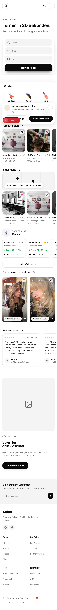
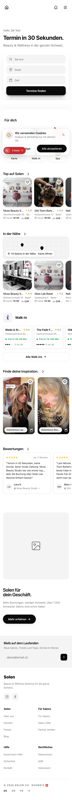
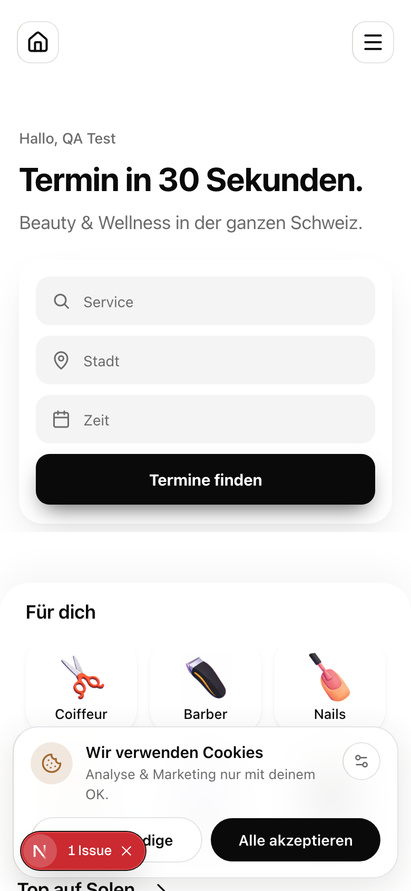
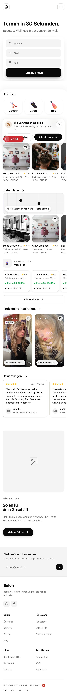

Real app, real components, real session + seed data: screenshots of the running pages. "After" frames are the SAME live DOM with only the approved DS treatments patched in. Scroll inside each phone. One section per page; more pages get appended as they're captured.



